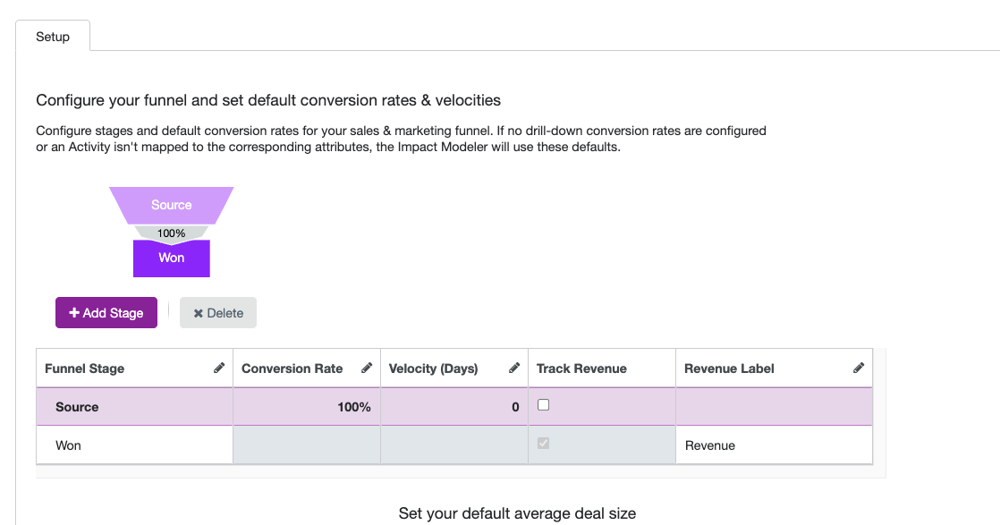
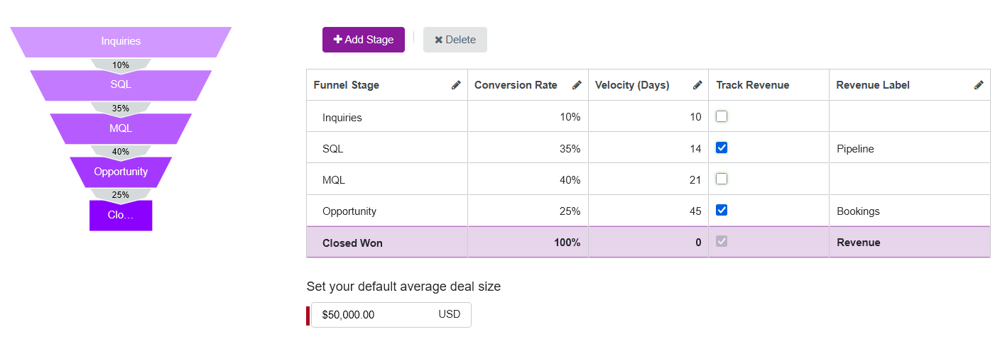
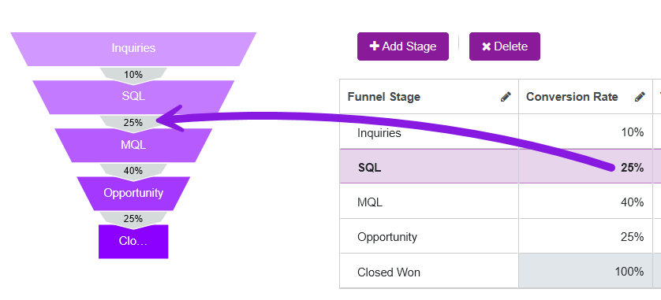
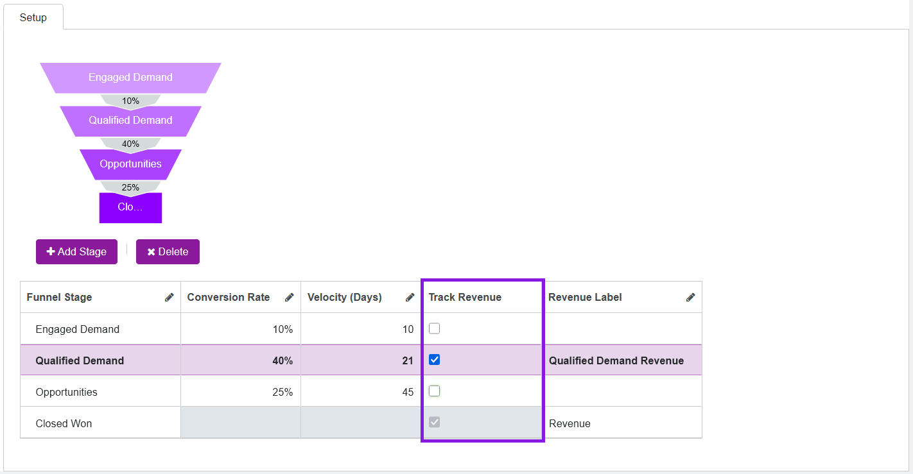
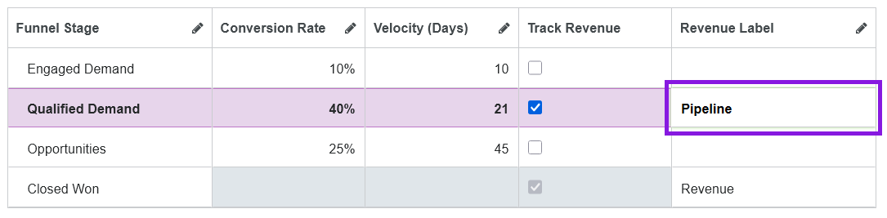
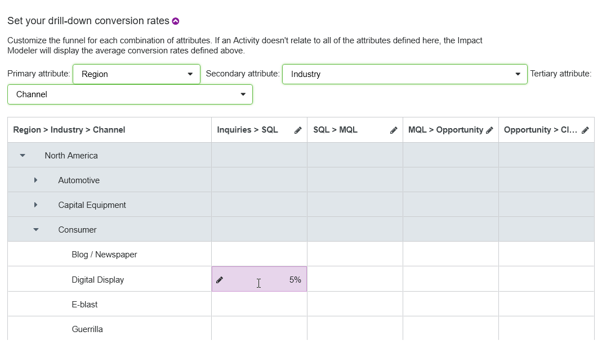

Create and configure Impact Modeler pipeline models (Preview)
In Uptempo Campaign Management, you can use the Impact Modeler to track and analyze the impact of marketing activities on the demand pipeline.
As an administrator, you must configure your pipeline model to enable Impact Modeler for your organization. The model consists of the following parts:
The structure of your organization's demand generation funnel. This consists of the stages that you track as customers move through the sales pipeline, from lead to closed/won deal.
Your baseline funnel performance metrics. This includes typical conversion rates (the rate at which leads move from one funnel stage to the next), velocities (how fast they move between stages), and the average value of a closed/won deal.
Segment-specific custom metrics to enhance the baseline metrics. These provide alternative, more specific funnel performance assumptions based on a combination of dimensions, such as activity attribute values and activity groups. For example, you can set overrides for scenarios such as if the average deal size for a certain product is higher or lower, or if deals in a particular market close faster (or slower) than average.
How the pipeline model works
The following screenshot shows a default setup of a pipeline model in Campaign Management:

The pipeline model is defined by the following properties:
- Stage
A stage represents a step in the customer's journey towards making a purchase. A pipeline usually has 2 to 10 stages, depending on your marketing and sales processes.
- Conversion rate
Represents the percentage of inquiries that reach the next stage.
- Velocity
The average number of days it takes a lead to progress from one funnel stage to the next.
- Average deal size
The average revenue generated for closed opportunities (B2B), or the average order size (B2C).
When a user enters a planned number of inquiries for an activity, the model calculates when to expect what number of inquiries and what projected revenue based on above funnel information.
Segment-specific custom metrics
Conversion rates, velocity, and average deal size may not be identical for every activity. You can define custom metrics for these activities. The custom metrics are applied to activities by defining segments based on specific values for one or more dimensions (activity type groups or attribute values).
The following example shows custom metrics that are defined according to the Business Unit attribute as the primary dimension, and Product as a secondary dimension:

- Example 1: Custom conversion rates (2 dimensions)
The baseline conversion rate from the Inquiries stage to the next stage (MQL) is set to 40%:

There are also custom conversion rates for several segments. These segments are defined using two dimensions: the Business Unit and Product attributes.
When an activity is assigned to the B2B-Direct business unit, the conversion rate used for pipeline projections is determined by the product assigned to the activity:
For Product A, the custom conversion rate of 55% is used.
For Product B the custom conversion rate is 45% is used.
For VR set, and any other product for which there is no custom conversion rate, the baseline conversion rate is used.

- Example 2: Custom velocities (1 dimension)
The baseline velocity from the Inquiries stage to the next stage (MQL) is set to 5 days:

There are also custom velocities for several segments. These segments are defined using a single dimension, the Persona attribute.
When an activity is assigned to the Economic Buyer persona, the custom velocity of 10 days is used.
For the Internal Influencer persona, and any other persona for which there is no custom velocity, the baseline velocity is used.

- Example 3: Custom deal sizes (3 dimensions)
The default baseline deal size is set to $10,000:

There are also custom deal sizes for several segments. These segments are defined using three dimensions: the Customer Segment, Product and Country attributes.
When an activity is assigned to Enterprise and Product A, the deal size used for pipeline projections is determined by the country assigned to the activity:
For Canada, the custom deal size of $12,000 is used.
For Mexico, the custom deal size of $9,000 is used.
For Germany, the custom deal size of $15,000 is used.
For USA, UK, and any other country for which there is no custom deal size, the baseline deal size is used.

Configure the pipeline model
Configuration overview
To activate the Impact tab on activities and generate impact projections, you must set up your pipeline model. The setup process consists of the following steps:
Define funnel stages: Set up the stages of your demand generation funnel.
Set baseline performance metrics: Specify the typical conversion rate and velocity between each stage, and the average deal size, to use for revenue projections.
Optional: Configure per-stage revenue projection: Choose if you want to project revenue at stages of the pipeline other than the last stage.
Optional: Set segment-specific custom metrics: Specify custom conversion rates, velocities, and deal sizes to use for specific segments instead of the baseline metrics.
Open the Impact Modeler settings
You can configure all settings related to your pipeline model from the Impact Modeler section in Activity Configuration.
In the Uptempo navigation menu, click
 Activities.
Activities.In the Activities section, click
 Settings. The Activity Configuration page opens.
Settings. The Activity Configuration page opens.On the Activity Configuration page, click Measures > Impact Modeler. The Impact Modeler Setup page is shown.
Set up funnel stages
The stages of your demand generation funnel form the foundation of the pipeline model. The model's default funnel contains two stages:
The starting or "top of funnel" stage
This stage is named Source by default
The ending or "bottom of funnel" stage
This stage is named Won by default
{kind=link}

Between these two default stages, you can add as many additional stages as you need. You can name your funnel stages (including the two default stages) however you like. A typical demand generation funnel consists of around five stages, for example:
Inquiries
Marketing Qualified Lead (MQL)
Sales Qualified Lead (SQL)
Opportunity
Closed Won
{kind=link}

The exact number of stages that you set up depends on how your organization defines the customer journey and tracks progress through the pipeline.
Configure funnel stages
On the Impact Modeler page, click + Add Stage. A new row is added to the funnel stage configuration table, and the new funnel stage is added to the funnel diagram.
By default, newly added stages are named New Stage. To edit the name of a stage, click on its name under the Funnel Stage column. Type the name you want to use into the field, then click anywhere outside the field to finish editing.
Repeat steps 1-2 until you have added and named all the funnel stages you want to use.
To save and apply your changes, click Save.
The page reloads, and your changes to the funnel take effect immediately.
Set up baseline performance metrics
After you set up the stages of your demand generation funnel, you can define the baseline stage-to-stage performance metrics that Impact Modeler uses to generate revenue projections. There are three metrics you need to define:
- Conversion Rate
The average percentage rate at which leads move from one stage to the next. For example, if 100 unqualified leads typically generate 25 MQLs, that's a 25% conversion rate between those stages.
- Velocity
The average number of days that a lead takes to move from one stage to the next.
- Deal Size
The average amount of revenue generated when you close a deal and successfully convert an opportunity into a customer.
You specify the conversion rate and velocity individually per stage. The deal size only applies to the final stage, so you only set it once, not per stage.
Configure the model's baseline performance metrics
On the Impact Modeler Setup page, enter the average deal size you want to use for projections in the Set your default average deal size field.
The currency of this field is automatically set to the primary plan currency.
Use the funnel stage configuration table to set the baseline conversion rates and velocities.
Under the Conversion Rate column, click on a row to edit the conversion rate. Enter the conversion rate (as a percentage) from the selected stage to the next stage, then click anywhere outside the field to finish editing. The new rate you set is immediately reflected in the funnel diagram:

Under the Velocity (Days) column, click on a row to edit the velocity. Enter the velocity (in days) from the selected stage to the next stage, then click anywhere outside the field to finish editing.
Repeat the previous step for each funnel stage listed in the table (except the final stage, where these metrics are not applicable).
To save and apply your changes, click Save.
The page reloads, and your changes to the funnel take effect immediately.
Configure per-stage revenue projection
By default, Impact Modeler projects revenue only for the final stage of the funnel (for closed deals). If you want to see projections throughout the pipeline, you can optionally turn on revenue projection for any other funnel stage.
For each stage where revenue projection is enabled, you can also set a custom label that reflects the terminology your organization uses for projected revenue at that stage: for example, "Pipeline", "Bookings", etc.
When revenue projection is turned on for a funnel stage, projections are displayed on the details panel of all activities where Impact Modeling is enabled, under the Impact section:
On the Planned tab, the funnel chart displays a revenue projection for each stage where it is enabled, using the custom label (if specified).
On the Actual tab, the actuals input table displays columns for manually entering stage-specific revenue, also using the custom label.
Enable revenue projection for a funnel stage
On the Impact Modeler Setup page, find the stage for which you want to enable revenue tracking in the table.
To enable revenue projection for a stage, select the checkbox in the Track Revenue column for that stage:

Optional: By default, the label for the stage's revenue projection is automatically set to " [Funnel Stage Name] Revenue". To change this label, click the field in the Revenue Label column for a stage and type in the label you want to use:

To save and apply your changes, click Save.
The page reloads, and your changes take effect immediately.
If you want to stop projecting revenue for a particular stage, deselect the Track Revenue option for that stage, then click Save.
Set up segment-specific custom metrics
The baseline performance metrics are averages across all of your demand generation efforts. The accuracy of your pipeline impact model's projections will be limited if you only use these values. In particular, you will see a lot of divergence from actual results if there is significant variability in conversion rate, velocity, and deal size for different segments of your customer base.
To improve the quality of your model's projections, you can define specific segments, and assign custom performance metrics to those segments. Whenever an activity is specific to a defined segment, the model uses the more precise custom metrics to calculate projections (instead of the less precise baseline metrics). For example, if you tend to see slower velocities but higher conversion rates and deal sizes with enterprise prospects, you can set up custom metrics to improve the model's projections for this segment.
In your pipeline impact model, you define segments with activity attributes. For each custom metric, you can select up to three list-type activity attributes (Drop-Down List or Multi-Select List), then define custom metrics for each combination of attribute values.
- Example 1: One Attribute
You can create large-scale segments based on just one attribute.
Example scenario attribute:
Industry
Example attribute values:
Healthcare
Financial Services
Why:
Some industries have regulatory complexity that can significantly reduce velocity. For example, Financial Services and Healthcare can often have longer sales cycles due to regulatory compliance.
- Example 2: Two Attributes
You can combine two attributes to create more granular scenarios. This is especially useful for attributes that are strongly correlated in terms of their impact on the funnel.
Example scenario attributes:
Product + Geography
Example attribute value combinations:
Product A + North America
Product A + APAC
Why:
Budgets and product-market fit can vary regionally. For example, a product might have a higher average deal size in North America, or prospects for the same product in APAC might take longer to go from SQL to Opportunity.
- Example 3: Three Attributes
If your organization has a lot of high-quality historical performance data and the ability to analyze it in depth, you can use up to three attributes to capture the most granular scenarios.
Example scenario attributes:
Product + Geography + Channel
Example attribute value combinations:
Product A (SMB) + North America + Paid Search
Product B (Enterprise) + North America + Event
Why:
You might find that certain key attributes drive very large variances in your demand funnel's metrics. For example:
For an SMB-focused product in North America, digital ads might generate few MQLs from a lot of inquiries, but lead to short sales cycles for comparatively small deal sizes.
For an Enterprise-focused product in the same market, in-person events like trade shows might drive much higher conversion rates and larger deal sizes than for the SMB-focused product — but these deals might also come with longer sales cycles.
Configure custom performance metrics for specific segments
On the Impact Modeler Setup page, click the section Set your drill-down conversion rates to expand it.
Use the Primary attribute menu to select the first attribute you want to use to define the scenario for conversion rates. A table is displayed that has rows for each of the values in the selected attribute, and columns for each of the transitions between stages in your funnel.
Optional: Use the Secondary attribute and Tertiary attribute menus to select additional attributes to define the scenario for conversion rates. When you select more than one attribute, every combination of values from the selected attribute is added to the table as a row:

To set a custom conversion rate for an attribute value (or value combination), find the cell where its row intersects with the column for the stage transition for which you want to set the conversion rate. Click the cell to edit it, type in the conversion rate you want, then click anywhere outside the cell to finish editing.
Optional: Repeat step 4 for any other attribute value (or value combination) and stage transition for which you want to set a custom conversion rate.
Click on the section Set your drill-down velocities and repeat steps 2-5 to set custom velocities for stage transitions and attribute value pairs.
Click on the section Set your drill-down deal sizes and repeat steps 2-5 to set custom deal sizes for stage transitions and attribute value pairs. As the average deal size only applies to the last stage in the funnel, there is only one column you can edit in the table for custom deal sizes.
To save and apply your changes, click Save.
The page reloads, and your changes take effect immediately. On all activities that have attribute values for which you have specified a custom conversion rate, velocity, or deal size, the custom value is used in the activity's details panel > Impact section.